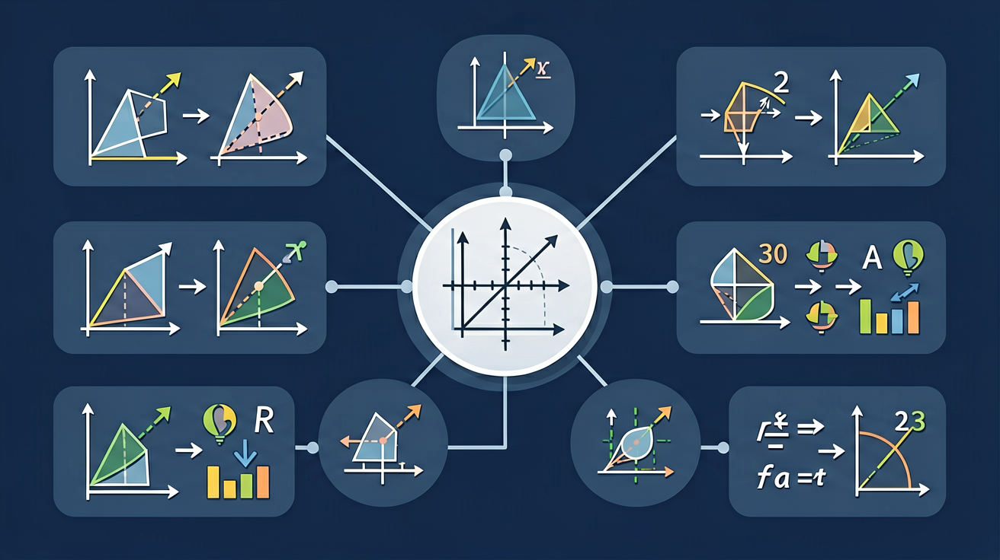

探索无理数的世界，掌握根式的化简与运算，感受数学之美

🎯 能说出二次根式有意义的条件
🎯 能判断两个二次根式是否为同类二次根式
🎯 能计算含二次根式的混合运算
❓ 为什么根号里的数一定要非负？
❓ 根号a的平方怎么一会儿等于a一会儿等于-a？
❓ 分母有根号时到底该怎么化简？
学完这一课，这些问题你都能自信地回答。
下列式子中，是二次根式的是？
√(3²)+√[(-4)²]的值等于？
形如 √a（a≥0）的式子叫二次根式，被开方数必须非负。最简二次根式要求被开方数不含平方因数、不含分母。同类二次根式化简后被开方数相同，才能像合并同类项那样相加减。
化简 √(a²b)=a√b（a≥0）；分母有根号时分母有理化。加减前必须先化简，否则会误判是否可以合并。
常见误区：常见误区是直接把 √a + √b 写成 √(a+b)，或忽略被开方数非负的条件。
要使 √(x−2) 有意义，x 应满足？
计算 √12 − √3 的结果是？
And：学生已掌握平方根概念
But：对根号下含字母的表达式陌生
Therefore：建立二次根式基本认知框架
形如√a（a≥0）的式子叫二次根式。关键记住两点：1.根指数是2（可省略不写）2.被开方数必须非负。比如√9=3是二次根式，而√(-4)在实数范围内无意义。特别注意：√(x²+1)永远有意义，因为x²+1≥1>0。
🌍 装修时计算瓷砖用量：用√(房间面积÷单块瓷砖面积)快速估算所需块数，比如6㎡房间用0.09㎡的瓷砖，需要√(6÷0.09)≈8.16块（实际取9块）。
下列哪个是二次根式？
And：知道被开方数需≥0
But：忽略√a本身也≥0
Therefore：培养双向非负思维习惯
二次根式有'双重非负性'：1.被开方数a≥0 2.整个√a≥0。例如√(x-1)中，既要x-1≥0→x≥1，同时√(x-1)结果也≥0。解方程时常用到这点：已知√(2y+3)=5，则2y+3=25→y=11。绝对不能出现√a=-2这种情况！
🌍 快递盒尺寸设计：当要求纸箱体积√(V)≤10cm时，实际限制的是V≤100cm³，这就是利用√a的非负性反推约束条件。
若√(m-5)有意义，m的范围是？
And：会计算具体数字的根式
But：面对字母表达式不会化简
Therefore：掌握根式化简的通法
化简关键步骤：1.分解质因数 2.凑完全平方数。比如√50=√(25×2)=5√2。字母表达式同理：√(a³b)=√(a²·ab)=a√(ab)（a≥0,b≥0）。特例：√(a²)=|a|，当a≥0时直接等于a。记住口诀：'能开方就开方，开不尽留着根号'。
🌍 DIY相框边框长度计算：当需要√(8L)厘米的装饰条时，实际购买2√2L厘米更精确（如L=2时√16=4cm，2√4=4cm验证正确）。
化简√(12x²y)（x>0,y≥0）
And：能进行单项根式计算
But：混合运算时规则混淆
Therefore：建立完整运算体系
四则运算规则：1.加减法→先化简再合并同类根式（如3√2+5√2=8√2）2.乘除法→系数相乘除，被开方数相乘除（如2√3×4√5=8√15）。特别注意：√a+√b≠√(a+b)，比如√4+√9=2+3=5≠√13。例子：(6√8)÷(2√2)=3√4=6。
🌍 烘焙配方调整：原配方用√18克糖，现要做1.5倍分量，计算1.5×√18=1.5×3√2=4.5√2≈6.36克（取6.4克）。
计算3√6-√24+√54
开放任务：用三步写出你如何向同学讲清「二次根式」。
二次根式=根号+被开方数，关注被开方数≥0的条件
√a表示平方等于a的非负数，是乘方的逆运算
对比√(a²)与(√a)²的区别：前者a可正可负，后者a必须≥0
用正方形边长和面积关系可视化√a的几何意义
将分母有理化技巧迁移到解含根式的分式方程中
关于最简二次根式的判断，正确的是
用不同尺寸的方形地砖（边长分别为√2m、√8m、√18m）拼成4m×4m的正方形区域
💡 用面积模型理解开方意义。
外链：https://phet.colorado.edu/sims/html/area-model-algebra/latest/area-model-algebra_zh_CN.html
先独立作答，再点选项查看对错与错因。
下列哪个二次根式化简结果与√8相等？
将√45化为最简二次根式正确的是
下列各组二次根式中，属于同类二次根式的是
计算√50 + √18 = ____
答案：8√2
√50=5√2，√18=3√2，相加得8√2
若√(2x)是最简二次根式，则x的最小整数值是____
答案：2
2x不能含平方因数，x最小为2
✅ √(a²)=|a|
💡 忽略a为负数时的情况
✅ 强调√a+√b≠√(a+b)
💡 错误类比乘法分配律
✅ 需通过分子分母同乘√2实现有理化
💡 不理解有理化本质
口诀：根号非负是前提，化简运算要仔细，同类合并看根里，分母有理化牢记
类比：二次根式像快递箱，被开方数是物品，必须完好（非负）才能打包
（中考真题）若√(x-1)在实数范围内有意义，则x的取值范围是？
计算(√12-3√3)÷√3的结果是？
（迁移题）用两个面积为3的正方形拼成长方形，其对角线长为？
点击节点跳转到对应章节；可切换布局。